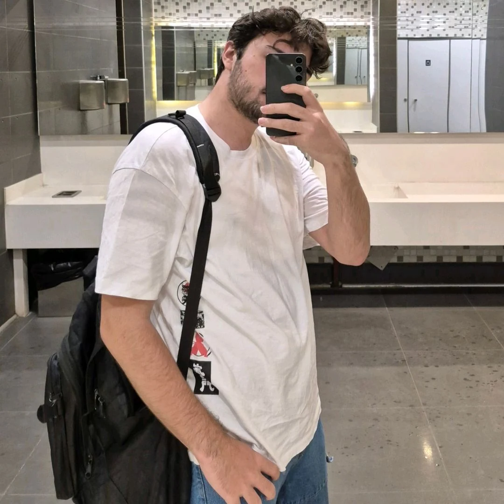

İlkay LMS & Website
Modern eğitim ihtiyaçlarına yönelik tasarlanmış, kapsamlı bir Öğrenim Yönetim Sistemi (LMS). Gelişmiş altyapısı ile dijital eğitimi kolaylaştırır.
01 Merhaba, ben
Pedagojik altyapımı modern yazılım mimarisiyle harmanlıyor; web, mobil ve masaüstü platformlarında yapay zeka destekli teknolojiler ve akıllı otomasyon sistemleri inşa ediyorum.
Yalnızca eğitim teknolojileri değil, verdiğiniz bilgiler dahilinde herhangi bir konuda yardımcı olabilirim.

02 / Yetkinlikler
Modern sistemler inşa etmek için kullandığım temel araçlar ve diller.
03 / Seçili çalışmalar
Geliştirdiğim sistemler, e-ticaret altyapıları ve mobil uygulamalar.
Modern eğitim ihtiyaçlarına yönelik tasarlanmış, kapsamlı bir Öğrenim Yönetim Sistemi (LMS). Gelişmiş altyapısı ile dijital eğitimi kolaylaştırır.
Android platformu için geliştirilmiş, kullanıcı dostu arayüze sahip modern mobil uygulama tasarımı.

Müşteri talepleri doğrultusunda özel olarak kodlanan, kapsamlı filtreleme özelliklerine ve dinamik yönetici paneline sahip gelişmiş e-ticaret platformu.

Sunucu yönetimi, özel ekonomi mekanikleri, moderasyon ve otomasyon süreçleri için geliştirilmiş çeşitli Discord botu sistemleri.

Öğrencilerin akademik gelişimlerini takip eden, modern yapay zeka teknolojilerini pedagojik yaklaşımlarla harmanlayarak kişiselleştirilmiş rehberlik sunan akıllı mobil öğrenci koçu uygulaması.

TEKNOFEST 2025 Eğitim Teknolojileri kategorisi için geliştirilen, teknoloji ve eğitimi bir araya getiren yenilikçi takım projesi.

Python ile geliştirilmiş, özel "uyanma kelimesi" (wake-word) entegrasyonuna sahip, kişiselleştirilebilir masaüstü yapay zeka asistanı uygulaması.

PHP ve XAMPP altyapısıyla sıfırdan inşa edilen, detaylı kategori filtreleme özelliklerine ve özel yönetici paneline sahip e-ticaret sitesi.
04 / Hizmet alanları
Teknik bilgi birikimimi ve pedagojik altyapımı kullanarak sunduğum profesyonel çözümler.
Müşteri ihtiyaçlarına yönelik, sıfırdan kodlanmış performanslı web siteleri (Odenys vb.), dinamik e-ticaret platformları ve yönetim panelleri inşa ediyorum.
Dijital dönüşüm süreçlerine uygun LMS altyapıları kuruyor; düzenli planlamalarla (haftalık rutinler) akademik rehberlik, teknoloji entegrasyonu ve özel ders hizmeti sunuyorum.
Süreçleri hızlandırmak için kurumlara veya sunuculara özel; yapay zeka asistanları, akıllı otomasyon araçları, internet siteleri ve Android uygulamaları geliştiriyorum.
05 / Çalışma ortamı
Yüksek performanslı geliştirme ve oyun optimizasyon süreçleri için tercih ettiğim donanım ve yazılım ekosistemi.
06 / Kısa cevaplar
Hakkımda veya çalışma stilimle ilgili en çok merak edilenler.
07 / Birlikte çalışalım
Projelerimi incelemek veya ortak bir fikir üzerine konuşmak için bana ulaşabilirsin.